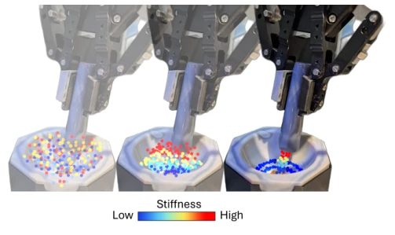
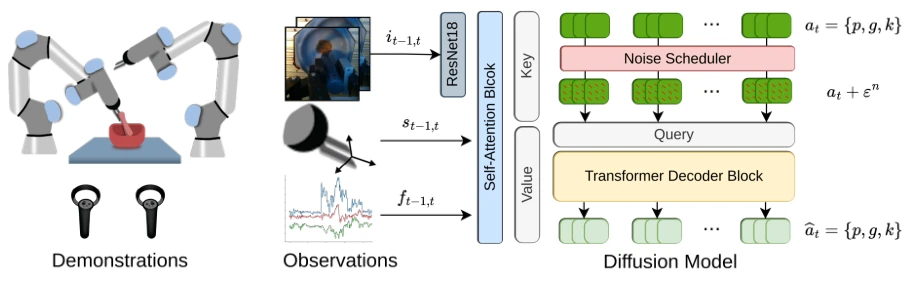
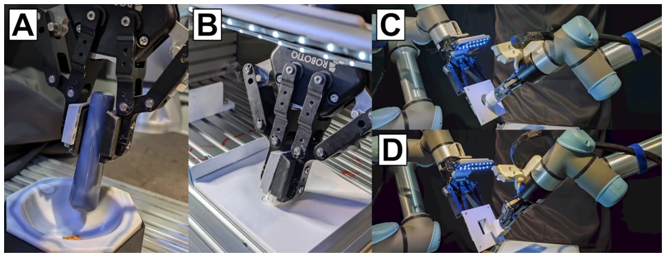
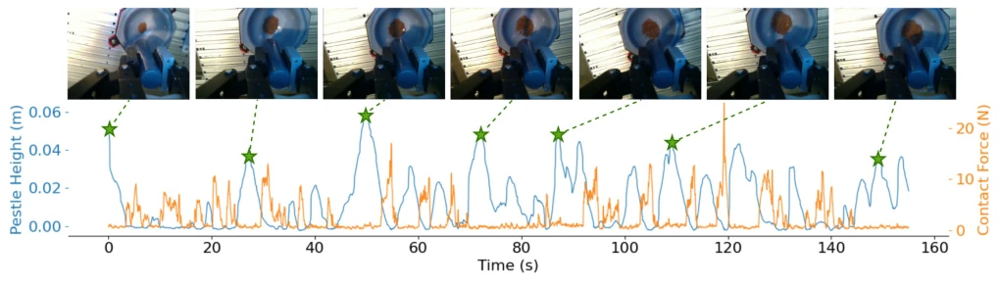
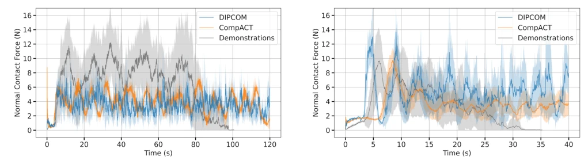

Learning Diffusion Policies from Demonstrations For Compliant Contact-rich Manipulation
Malek Aburub, C. C. Beltran-Hernandez, Tatsuya Kamijo, Masashi Hamaya abspdf
论文点评Review
这篇论文给刚性机器人披上了“柔性”外衣，用扩散模型（Diffusion）解决了接触丰富任务中的力控难题。DIPCOM 框架确实比之前的 Comp-ACT（VAE 基）在粉末研磨和橡皮擦任务上表现更稳，成功率和细粉产出率显著提升。不过，别高兴太早，扩散模型的计算开销和超参数敏感性是硬伤，调参比调机械臂还累。虽然它在长周期重复任务上展现了更好的多样性，但插入任务的表现和基线差不多，说明扩散模型并非万能药。总的来说，这是把生成式 AI 硬塞进力控领域的一次成功尝试，但离工业级落地还有距离，毕竟算力成本摆在那里，且对机器人控制频率的扰动更敏感，实际部署需谨慎权衡性能与效率。
This paper endows rigid robots with a "flexible" guise, using Diffusion models to solve force control challenges in contact-rich tasks. The DIPCOM framework indeed performs more stably than the previous Comp-ACT (VAE-based) on powder grinding and eraser tasks, with significantly improved success rates and fine powder output rates. However, one should not be too optimistic; the computational overhead of diffusion models and hyperparameter sensitivity are significant drawbacks, as tuning parameters is more exhausting than tuning robotic arms. Although it demonstrates better diversity in long-cycle repetitive tasks, the performance on insertion tasks is similar to the baseline, indicating that diffusion models are not a panacea. Overall, this is a successful attempt to forcibly integrate generative AI into the field of force control, but there is still a distance from industrial-level implementation, after all, the computing power cost is there, and it is more sensitive to disturbances in robot control frequency, so actual deployment requires careful trade-off between performance and efficiency.
Maintaining stable contact and consistent force control for rigid robots in contact-rich environments is a long-standing difficult problem [3]. Although complex skills can be learned from Learning from Demonstration (LfD) [1], for tasks like powder grinding requiring long-term force control, traditional rigid control often fails. The previous Comp-ACT method [4] combines force control and VAE-ACT policies, but performs poorly on long-cycle repetitive behaviors, easily getting "stuck" or having incoherent actions. Additionally, the action diversity generated by VAE is not as good as diffusion models [5], making it difficult to capture multi-modal distributions. This paper aims to utilize the multi-modal modeling capability of diffusion models to enhance the adaptability and stability of force control policies in long horizon tasks, making up for the deficiencies of existing methods in complex contact tasks, especially targeting repetitive operations requiring fine force control.
The overall DIPCOM process is divided into data collection, policy training, and inference execution. First, demonstration data is collected via VR teleoperation, recording RGB images, force/torque sensor readings, and proprioceptive data. The policy network adopts a conditional diffusion model, inputting observation information and outputting Cartesian end-effector pose (including 6D continuous orientation representation), gripper actions, and arm stiffness parameters. Architecturally, ResNet18 is used to extract visual features, combined with force control data input into the Transformer encoder, while the decoder processes noisy actions through cross-attention. Training adopts the DDIM formula, and during inference, Temporal Ensemble technology is used to smooth action sequences, reducing cumulative errors brought by long horizon prediction. The core innovation lies in directly incorporating stiffness adjustment into the diffusion policy output, rather than controlling position only, and improving force control robustness through multi-modal distribution modeling. Additionally, the 6D orientation representation solves the discontinuity problem of traditional axis-angle representation, ensuring neural network fitting is more stable. This framework, through multi-modal distribution modeling, not only predicts position but also adjusts stiffness simultaneously, enabling the robot to adaptively adjust force during the contact process.

Fig. 1: DIPCOM Denoising Process: illustration of how DIPCOM predicts end-effector positions and adjusts arm stiffness during multiple timesteps, enabling consistent force during contact and smooth transitions between movements.

Fig. 2: Policy Framework: Left: Dataset collection framework. Middle: Observations O include images it−1,t, robot Cartesian pose st−1,t, and measured force/torque ft−1,t, all encoded using a self-attention transformer. Right: During training, actions at—comprising the end-effector pose p, gripper pose g, and stiffness K—are processed through a noise scheduler that adds Gaussian noise ϵ over time steps n. These noisy actions are then input into the transformer decoder block. During inference, Gaussian noise replaces the training noise, and the transformer decoder block predicts the actions ˆat
Experiments were conducted on dual UR5e robots, comparing DIPCOM and Comp-ACT [4]. Tasks include powder grinding, eraser removal, and two-finger insertion. In the grinding task, DIPCOM's fine powder output ratio reached 56%, far exceeding Comp-ACT's 10%, and it can reproduce the human "grinding-checking" cycle behavior. In the eraser task, DIPCOM success rate was 52.3%, while Comp-ACT was 0%. In the two-finger insertion task, both success rates were comparable, but DIPCOM demonstrated more diverse trajectories. Results show diffusion models have obvious advantages in long-cycle force control tasks, but did not significantly surpass the baseline on simple insertion tasks. Additionally, DIPCOM is more sensitive to hyperparameters and requires higher computing resources, which may become a bottleneck in practical applications.

Fig. 3: Contact-rich manipulation tasks used for evaluation. A - Powder grinding. B - Pencil eraser. C - Bimanual round peg insertion. D - Bimanual cuboid peg insertion.

Fig. 4: Powder Grinding performance by the DIPCOM policy. The policy imitates the demonstrated behavior of pausing every few seconds to look at the powder’s state before continuing the grinding process. Position Z indicates the height of the tip of the pestle relative to the mortar.

Fig. 5: A - Powder Grinding: Force profile comparison between the demonstrations, the proposed method DIPCOM, and the baseline Comp-ACT. A bold line and color-shaded area represent the average and standard deviation normal contact force, respectively.